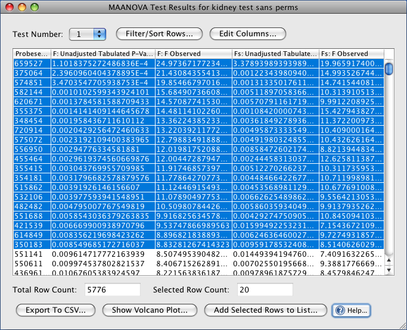
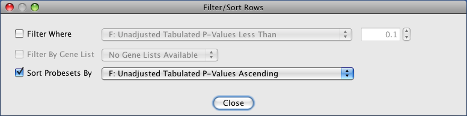
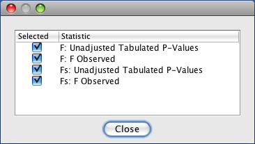

After testing a term you will want to inspect the test results using a volcano plot and a tabular view. To see a tabular view of test results you can either right click on a test result in your project tree and select Show Results Table for ... or you can select Analysis→Test Results Tables→... from J/maanova's main menu.

Test Results Table
Test Number: this drop down will only appear in the case of a t-test where more than one contrasts were tested. Select the number of the contrast that you want to see test results for.
Click the Filter/Sort Rows button to filter and/or sort the table rows

Filter and Sort Dialog
Filter Where checking this option allows you to specify row filter criteria. Any rows that don't meet the specified criteria will not appear in the results table
Filter By Gene List: this option is only enabled if the user has already created at least one gene list for the microarray experiment that corresponds to the test. If this option is selected then only genes which are a part of the selected gene list will be displayed in the results table.
Sort Probesets By: allows you to select a statistic to sort the results table by
Select the Edit Columns button to remove columns from the results table. This can be helpful if the display is crowded by too many columns.

Edit Columns Dialog
Total Row Count: displays the total number of rows in the table (after any filters are applied)
Selected Row Count: displays the number of rows that the user has selected (see Show Volcano Plot and Add Selected Rows to List below)
Export to CSV: exports the current table as a CSV file which can be opened by spreedsheet editors
Show Volcano Plot: opens up a volcano plot for the relevant test results. Any selected rows will appear as red dots in the volcano plot.
Add Selected Rows to List: adds the selected rows to a gene list.